File: 000060.gt.txt (if the image is defective, simply delete all Arabic text and the line will be excluded)
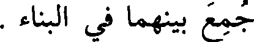
جمع بينهما في البناء .
File: 000061.gt.txt (if the image is defective, simply delete all Arabic text and the line will be excluded)
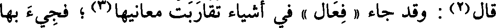
قال(2) : وقد جاء « فعال » في أشياء تقاربت معانيها(3) ؛ فجيء بها
File: 000062.gt.txt (if the image is defective, simply delete all Arabic text and the line will be excluded)
[607] على مثال واحد ، وهو « الفرار » و « الشراد » و « النفار »
File: 000063.gt.txt (if the image is defective, simply delete all Arabic text and the line will be excluded)
و « الشماس » و« الطماح » ، و « الضراح »(4) مشبه بذلك ، والضرح(5) :
File: 000064.gt.txt (if the image is defective, simply delete all Arabic text and the line will be excluded)
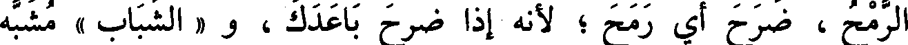
الرمح ، ضرح أي رمح ؛ لأنه إذا ضرح باعدك ، و « الشباب » مشبه
File: 000065.gt.txt (if the image is defective, simply delete all Arabic text and the line will be excluded)
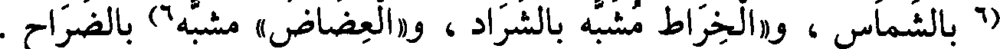
(6 بالشماس ، و« الخراط مشبه بالشراد ، و«العضاض» مشبه6) بالضراح .
File: 000066.gt.txt (if the image is defective, simply delete all Arabic text and the line will be excluded)
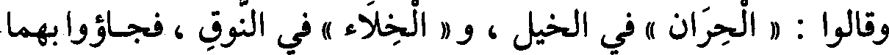
وقالوا : « الحران » في الخيل ، و« الخلاء » في النوق ، فجاءوابهما
File: 000067.gt.txt (if the image is defective, simply delete all Arabic text and the line will be excluded)
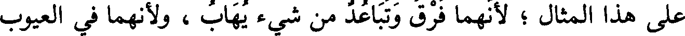
على هذا المثال؛ لأنهما فرق وتباعد من شيء يهاب، ولأنهما في العيوب
File: 000068.gt.txt (if the image is defective, simply delete all Arabic text and the line will be excluded)
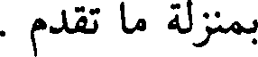
بمنزلة ما تقدم .
File: 000069.gt.txt (if the image is defective, simply delete all Arabic text and the line will be excluded)
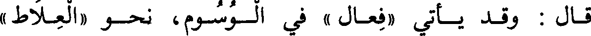
قال : وقد يأتي «فعال» في الوسوم، نحو «العلاط »
File: 000070.gt.txt (if the image is defective, simply delete all Arabic text and the line will be excluded)
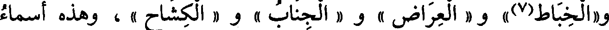
و«الخباط(7)» و « العراض » و « الجناب » و « الكشاح » ، وهذه أسماء
File: 000071.gt.txt (if the image is defective, simply delete all Arabic text and the line will be excluded)
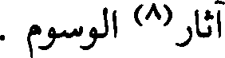
آثار(8) الوسوم .
File: 000072.gt.txt (if the image is defective, simply delete all Arabic text and the line will be excluded)
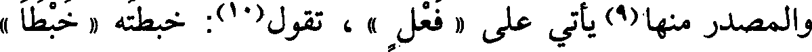
والمصدر منها(9) يأتي على « فعل » ، نحو(10): خبطته « خبطا »
File: 000073.gt.txt (if the image is defective, simply delete all Arabic text and the line will be excluded)
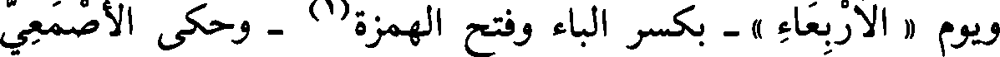
ويوم « الأربعاء » - بكسر الباء وفتح الهمزة (1) - وحكى الأصمعي
File: 000074.gt.txt (if the image is defective, simply delete all Arabic text and the line will be excluded)
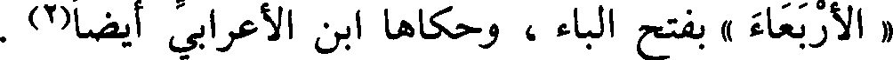
« الأربعاء » بفتح الباء ، وحكاها ابن الأعرابي أيضا(2) .
File: 000075.gt.txt (if the image is defective, simply delete all Arabic text and the line will be excluded)
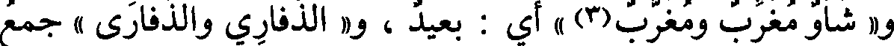
و« شأو مغرب ومغرب(3) » أي : بعيد ، و« الذفاري والذفارى » جمع
File: 000076.gt.txt (if the image is defective, simply delete all Arabic text and the line will be excluded)
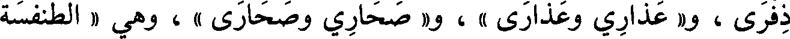
ذفرى ، و« عذارى وعذاري » ، و« صحارى وصحاري » ، وهي « الطنفسة
File: 000077.gt.txt (if the image is defective, simply delete all Arabic text and the line will be excluded)
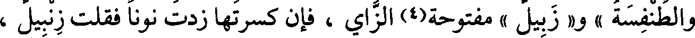
والطنفسة »، و« زبيل » مفوحة(4) الزاي ، فإن كسرتها زدت نونا فقلت زنبيل ،
File: 000078.gt.txt (if the image is defective, simply delete all Arabic text and the line will be excluded)
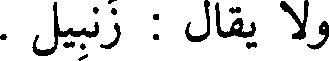
ولا يقال : زنبيل .
File: 000079.gt.txt (if the image is defective, simply delete all Arabic text and the line will be excluded)
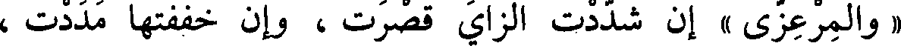
«والمرعزى » إن شددت الزاي قصرت ، وإن خففتها مددت ،
File: 000080.gt.txt (if the image is defective, simply delete all Arabic text and the line will be excluded)
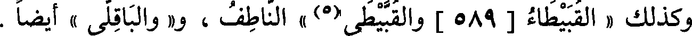
وكذلك « القبيطاء[589] والقبيطي(5) » الناطف ، و« الباقلى » أيضا .
File: 000081.gt.txt (if the image is defective, simply delete all Arabic text and the line will be excluded)
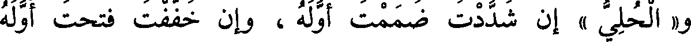
و« الحلي » إن شددت ضممت أوله ، وإن خففت فتحت أوله
File: 000082.gt.txt (if the image is defective, simply delete all Arabic text and the line will be excluded)
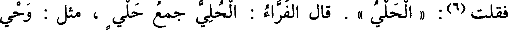
فقلت(6): « الحلى » . قال الفراء : الحلي جمع حلي ، مثل : وحى
File: 000083.gt.txt (if the image is defective, simply delete all Arabic text and the line will be excluded)
ووحي .
File: 000084.gt.txt (if the image is defective, simply delete all Arabic text and the line will be excluded)
و« قوباء » بفتح الواو مؤنثة لا تنصرف ، وجمعها قوب ، وإن سكنت
File: 000085.gt.txt (if the image is defective, simply delete all Arabic text and the line will be excluded)
الواو ذكرت وصرفت ، وهي « القلنسوة والقلنسية » إذا فتحت القاف ضممت
File: 000086.gt.txt (if the image is defective, simply delete all Arabic text and the line will be excluded)
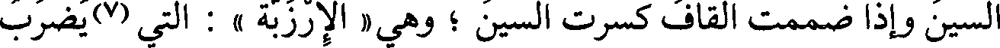
السين وإذا ضممت القاف كسرت السين ؛ وهي « الإرزبة » : التي (7) يضرب
File: 000087.gt.txt (if the image is defective, simply delete all Arabic text and the line will be excluded)
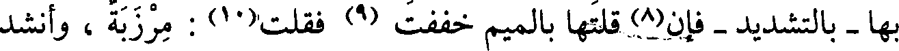
بها - بالتشديد - فإن(8) قلتها بالميم خففت (9) فقلت(10) : مرزبة ، وأنشد
File: 000088.gt.txt (if the image is defective, simply delete all Arabic text and the line will be excluded)
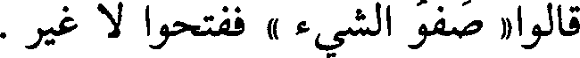
قالوا « صفو الشيء » ففتحوا لا غير .
File: 000089.gt.txt (if the image is defective, simply delete all Arabic text and the line will be excluded)
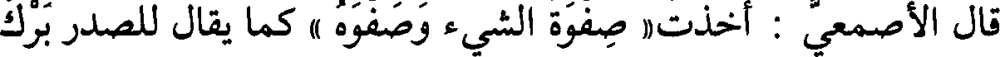
قال الأصمعي : أخذت« صفوة الشيء وصفوه » كما يقال للصدر برك
To Save: `Ctrl+s`, make sure to choose `Webpage, complete`!